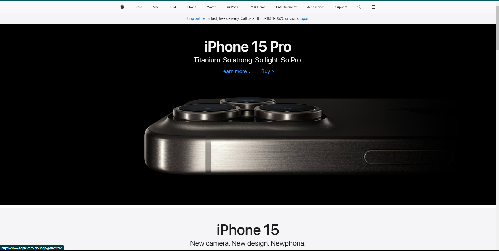
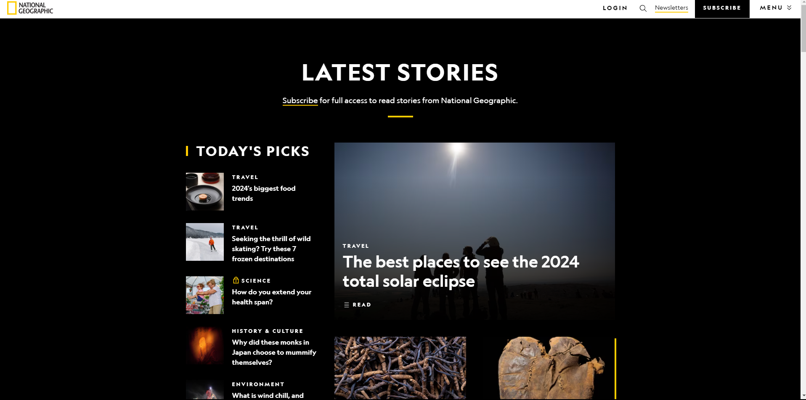

Visual Hierarchy
Apple
apple.com The Visual Hierarchy principle on this website page is portrayed through the use of contrasting colors. It uses a dark background and a white text images to highlight the content. The latest apple product is prominently displayed with a large image and text.
Rule of Thirds
BYU-Idaho
byui.eduThe Rule of Thirds is clearly displayed through the Headline and the subheadline. They could've put it in the middle but they placed it in the left side of the screen. It was also done in the nav links.
Contrast
National Geographic
nationalgeographic.com The dark background paired with white text creates a strong contrast making the content stand out. The information are organized because of the strong contrasting.